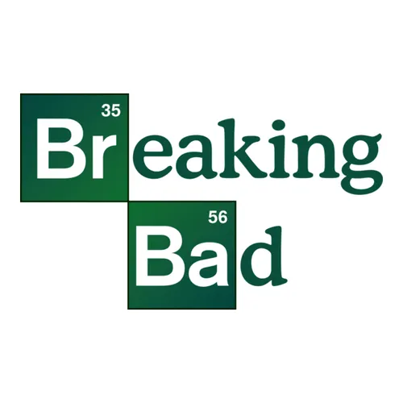

A série gira em torno de Walter White, um professor de química no ensino médio em Albuquerque, Novo México, que leva uma vida simples e enfrenta dificuldades financeiras. Ao ser diagnosticado com câncer de pulmão em estágio avançado, ele decide usar seu conhecimento em química para fabricar metanfetamina, garantindo a segurança financeira de sua família após sua morte. Para isso, se une ao ex-aluno problemático Jesse Pinkman, formando uma parceria que os leva ao mundo do crime.
 20.36.34_e0200fca.jpg)
 20.36.46_3151da34.jpg)